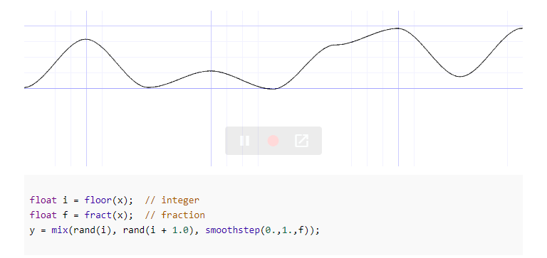

São pequenos programas feitos para rodar na GPU e que processam dados paralelamente. Esses dados podem ser:
- Vértices (Vertex shader)
- Pixels (Fragment shader)
- Dados arbitrários (Compute shader)
Hoje iremos focar nos fragment shaders.
#ifdef GL_ES
precision mediump float;
#endif
uniform vec2 u_resolution;
uniform vec2 u_mouse;
uniform float u_time;
uniform sampler2D texture1;
uniform sampler2D texture2;
void main() {
// This is a comment
vec2 st = gl_FragCoord.xy/u_resolution.xy;
st.x *= u_resolution.x/u_resolution.y;
vec3 color = vec3(0.);
color = vec3(st.x,st.y,abs(sin(u_time)));
gl_FragColor = vec4(color,1.0);
}
Linguagens de shader no geral não possuem uma função random, então usualmente geramos números pseudo-aleatórios no próprio shader
Como podemos gerar esses números?

O problema é que se utilizarmos apenas esses números como nosso ruído, obtemos resultados bem artificiais e nada parecidos com a maneira que o ruído aparece na natureza

Solução: Divisão dos valores de entrada em células e interpolação entre os valores aleatórios de células vizinhas
